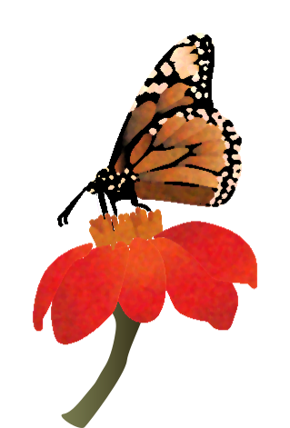

Meet the Pollinators
Monarch
(Danaus plexippus)Adult monarch butterflies possess two pairs of brilliant orange-red wings, featuring black veins and white spots along the edges. Each adult butterfly lives only about four to five weeks. Milkweed is the only plant on which monarchs will lay their eggs and the only source of food for baby caterpillars.

Monarch
(Danaus plexippus)Adult monarch butterflies possess two pairs of brilliant orange-red wings, featuring black veins and white spots along the edges. Each adult butterfly lives only about four to five weeks. Milkweed is the only plant on which monarchs will lay their eggs and the only source of food for baby caterpillars.
Monarch
(Danaus plexippus)Adult monarch butterflies possess two pairs of brilliant orange-red wings, featuring black veins and white spots along the edges. Each adult butterfly lives only about four to five weeks. Milkweed is the only plant on which monarchs will lay their eggs and the only source of food for baby caterpillars.
Sphinx Moth
(Sphingidae Sp.)Most sphinx moths are nocturnal, but some are most active at dawn and dusk, or during the day. The day-active species often mimic bees or hummingbirds.
Carpenter Bee
(Xylocopa Sp.)somewhat resembles the bumblebee but differs in having a nonhairy abdomen and in its habit of nesting in a tunnel excavated within solid wood.
Painted Lady